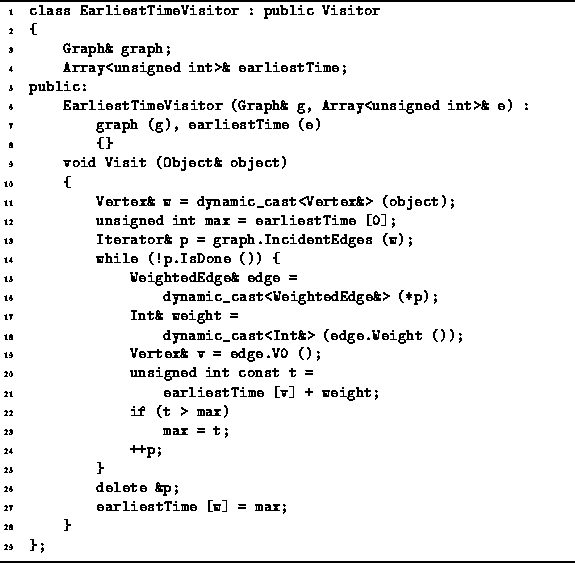
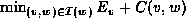
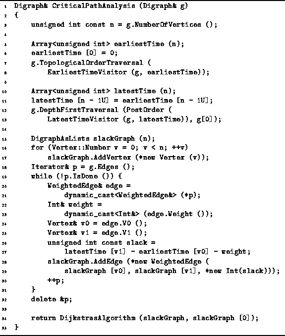
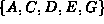
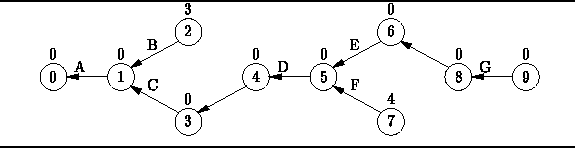

Data Structures and Algorithms
with Object-Oriented Design Patterns in C++
Data Structures and Algorithms
with Object-Oriented Design Patterns in C++
Given an activity-node graph,
the objective of critical path analysis is to determine
the slack time for each activity and
thereby to identify the critical activities and the critical path.
We shall assume that the activity node graph
has already been transformed to an edge-node graph.
The implementation of this transformation
is left as a project for the reader (Project  ).
Therefore, the first step is to compute the earliest and latest event times.
).
Therefore, the first step is to compute the earliest and latest event times.
According to Equation ,
the earliest event time of vertex w
is obtained from the earliest event times of all its predecessors.
Therefore, must compute the earliest event times
in topological order.
To do this, we define the EarliestTimeVisitor
shown in Program .

Program: Critical Path Analysis--Computing Earliest Event Times
The EarliestTimeVisitor has three member variables--graph, earliestTime and startTime.
The first is a reference to the event-node graph;
the second refers to an array used to record the  values;
and the third is the time at which the initial activity starts.
values;
and the third is the time at which the initial activity starts.
The Visit member function of the EarliestTimeVisitor
class implements directly Equation .
It uses an IncidentEdges iterator to determine
all the predecessors of a given node
and computes .
In order to compute the latest event times,
it is necessary to define also a LatestTimeVisitor.
This visitor must visit the vertices of the event-node graph
in reverse topological order.
Its implementation follows directly from Equation
and Program .
Program defines the routine
called CriticalPathAnalysis that does what its name implies.
This routine takes as its lone argument a reference
to a Digraph instance that represents an event-node graph.
This implementation assumes that the edge weights are instances of the
Int class defined in Program .

Program: Critical Path Analysis--Finding the Critical Paths
The routine first uses the EarliestTimeVisitor in a topological order traversal to compute the earliest event times which are recored in the earliestTime array (lines 5-8). Next, the latest event times are computed and recorded in the latestTime array. Notice that this is done using a LatestTimeVisitor in a postorder depth-first traversal (lines 10-13). This is because a postorder depth-first traversal is equivalent to a topological order traversal in reverse!
Once the earliest and latest event times have been found,
we can compute the slack time for each edge.
In the implementation shown,
an edge-weighted graph is constructed that is isomorphic with the
the original event-node graph,
but in which the edge weights are the slack times
as given by Equation (lines 15-31).
By constructing such a graph we can make use of Dijkstra's algorithm
find the shortest path from start to finish
since the shortest path must be the critical path (line 34).
The DijkstrasAlgorithm routine given in Section
returns its result in the form of a shortest-path graph.
The shortest-path graph for the activity-node graph of Figure
is shown in Figure .
By following the path in this graph from vertex 9 back to vertex 0,
we find that the critical path is .

Figure: The Critical Path Graph corresponding to Figure
 Copyright © 1997 by Bruno R. Preiss, P.Eng. All rights reserved.
Copyright © 1997 by Bruno R. Preiss, P.Eng. All rights reserved.